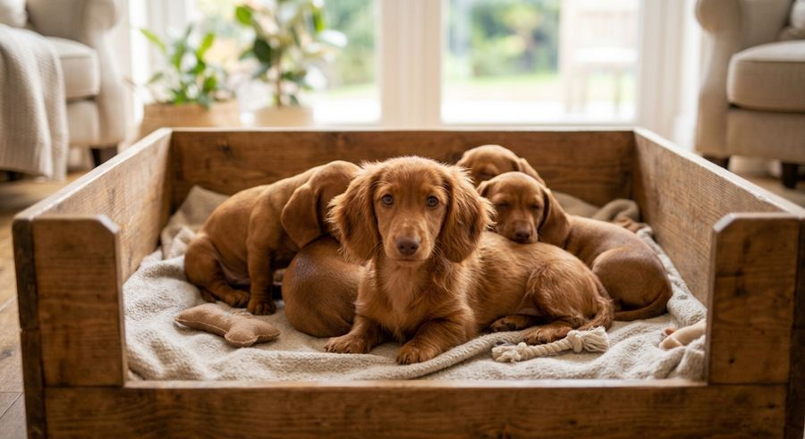

Erkläre, warum das Zuchtbuch allein nicht zeigt, ob die Anlage für langes Fell verloren ist.
Logbuch Seite 4 Feld „Do Now“●●○
Ohne Hilfe und ohne Gespräch. Die Anweisung dürft ihr euch von einer Mitschülerin oder einem Mitschüler vorlesen lassen. Schreibt zuerst ins Logbuch. Dieses Feld ist nur Notizraum.
Hilfe (3 Stufen, nacheinander öffnen)
1 · Wohin schauen: Begriffskarte, Logbuch Seite 1.
2 · Wie vorgehen: Trenne, was im Zuchtbuch steht (Fell der Tiere), von dem, was in den Tieren steckt.
3 · Teilergebnis: Das Zuchtbuch zeigt nur das ______ der Tiere.
3:00
Minuten
Das sieht man
Das Fell der Tiere: kurz oder lang.
Die Zahlen der Würfe.
Das sieht man nicht
Was in den Tieren steckt.
Ob eine Anlage vorhanden ist, die das Fell nicht zeigt.
Impuls
Das Foto
Foto zeigen, nichts erklären. Erst 20 Sekunden still beobachten.
Beide Elterntiere: kurzhaarig

Der neue Wurf
20
Was fällt euch auf?
Beide Fotos sind KI-Bilder (kennzeichnen, falls gefragt).
Fragenentwicklung · 3 Min
Welche Frage stellt sich euch?
Unsere Frage für heute
Gelenkte Beobachtungsfragen (Basis)
Welche Fellart haben die Elterntiere?
Welche Fellart hat der Welpe mit dem auffälligen Fell?
Erweiterung: offene Aufforderung „Stellt selbst eine Frage.“
Erarbeitung 1 · 6 Min · Paare
Hypothesen formulieren
Hypothese
Eine Vermutung, die man prüfen kann.
„Wenn …, dann …“
Zu jeder Hypothese gehört eine Vorhersage, die sich mit Zahlen überprüfen lässt.
Formuliere in Paaren zwei Hypothesen (H1 und H2) zu eurer Frage. Gib je eine Vorhersage an: Was passiert, wenn man zwei Welpen aus dem Zuchtbuch verpaart?
Logbuch Seite 4 Abschnitt „Hypothesen“●●○
Satzbausteine (anklicken, fügt in das gewählte Feld ein):
H1
Hypothese 1
H2
Hypothese 2
Hilfe (Basis, 3 Stufen)
1 · Wohin schauen: Auf das Foto: beide Elterntiere kurzhaarig, ein Welpe langhaarig.
2 · Wie vorgehen: Überlege zwei verschiedene Erklärungen. Bei der ersten fehlt die Anlage, bei der zweiten ist sie da, aber man sieht sie nicht.
3 · Teilergebnis: H1: Die Anlage für langes Fell ist ______. Dann haben alle Welpen ______ Fell.
Erweiterung (●●●): dritte Hypothese
Formuliere eine dritte Hypothese, zum Beispiel „Das Fell der Eltern mischt sich.“ Gib an, welches Ergebnis sie ausschließt.
H1
Die Anlage für langes Fell ist verloren. Vorhersage Wenn H1 stimmt, dann haben alle Welpen aus der Verpaarung kurzes Fell.
H2
Die Anlage ist da, aber man sieht sie nicht. Vorhersage Wenn H2 stimmt, dann können bei der Verpaarung langhaarige Welpen auftreten.
Modell · M4
Das Modell: Münzen statt Hunde
Ein Modell ist eine vereinfachte Nachbildung, die man testen kann.
1
Jeder Welpe bekommt von jedem Elterntier eine Anlage.
2
Jedes Elterntier hat zwei Anlagen und gibt davon eine weiter, zufällig.
3
Anlage K = kurzes Fell, Anlage l = langes Fell.
4
Langes Fell zeigt ein Welpe nur, wenn er zweimal l hat.
Zwei Münzen = ein Welpe
Kopf = K · Zahl = l
?
?
K K kurzhaarig
K l kurzhaarig
l K kurzhaarig
l l langhaarig
Wirf mehrmals: Welche Kombination zeigt langes Fell?
Logbuch Seite 4 Modellkarte M4
Erarbeitung 2 · 14 Min · Paare
Münzwurf: So geht ihr vor
1
Leite aus M4 ab, wie viele von 20 Welpen langes Fell haben. Schreibe die Zahl auf, bevor ihr werft.
2
Wirf beide Münzen gleichzeitig, 20-mal. Langes Fell hat ein Welpe nur bei zweimal Zahl (l und l).
3
Trage euer Ergebnis an der Tafel ein. Die Klasse addiert.
Logbuch Seite 5 Münzwurf-Protokoll●●○
Erst eintragen, dann werfen.
Trage zuerst deine Vorhersage ein.
0
Welpen geworfen
0
mit langem Fell
–
Anteil
–
Abstand zur Vorhersage
Ergebnis · Tafel
Klassenergebnis: Welpen mit langem Fell
Jedes Paar: Zahl der Welpen mit langem Fell von 20. Leere Zeilen zählen nicht.
0
Summe
–
Anteil
–
Streuung (min bis max)
Vergleiche deine Vorhersage mit deinem Ergebnis. Vergleiche dein Ergebnis mit der Klassensumme.
Was das Modell vorhersagt
≈ 25 %
langhaarige Welpen erwartet
≈ 5 von 20
je Paar, einzelne Paare streuen
Vier gleich wahrscheinliche Kombinationen: K K, K l, l K, l l. Eine davon zeigt langes Fell.
Wie viel sagt eine Stichprobe?
Wähle eine Anzahl an Welpen und beobachte den Anteil.
Logbuch · 10 Min · Einzelarbeit
Beurteilt das Modell
Beurteile, wo das Münzmodell von einem echten Wurf abweicht.
Logbuch Seite 5 Abschnitt „Beurteilen“●●○ · Erweiterung ●●●
Zufall
Warum weichen einzelne Paare von eurer Vorhersage ab?
Hilfe
1 · Wohin schauen: Auf die Klassentabelle: Wie weit streuen die Paare?
2 · Wie vorgehen: Vergleiche das kleinste und das größte Ergebnis mit 5.
3 · Teilergebnis: Jeder Wurf ist ______, deshalb ______ die Ergebnisse.
Zahlen
Wie sicher ist ein Ergebnis aus nur 20 Würfen?
Hilfe
1 · Wohin schauen: Auf die Kurve „Wie viel sagt eine Stichprobe?“ (Phase Klassenergebnis).
2 · Wie vorgehen: Vergleiche 20 Welpen mit 1000 Welpen.
3 · Teilergebnis: Bei wenigen Würfen ______ der Anteil stark.
Modell
Was lässt das Münzmodell weg, das bei echten Hunden eine Rolle spielt?
Hilfe
1 · Wohin schauen: Auf die vier Regeln der Modellkarte M4.
2 · Wie vorgehen: Überlege, was bei einem echten Wurf noch dazukommt.
3 · Teilergebnis: Ein echter Wurf hat zum Beispiel eine bestimmte ______.
Erweiterung
Entwickle eine Verbesserung des Modells und beurteile, ob sie sich lohnt.
Transfer · 4 Min
Welche Hypothese stützt das Ergebnis?
Entscheide, welche Hypothese das Ergebnis der Klasse stützt, und begründe in einem Satz.
Logbuch Seite 5 Abschnitt „Transfer“●●○
Satzbaustein:
Prüfe an den Zahlen:
Trage zuerst ein Klassenergebnis ein (Phase „Klassenergebnis“).
Erweiterung
Begründe, warum das Münzmodell allein H2 nicht beweist.
Das Münzmodell setzt voraus, dass die Anlage vorhanden ist. Ob es zu den echten Hunden passt, entscheiden erst die Daten im Spiel.
Ausblick · 42–45 Min
Im Zuchtlabor erzeugt ihr selbst Daten.
Passen sie zu unserer Klassensumme?
Später prüft ihr sie an Mendels Zahlen und am Zuchtbuch (Teil 5).
Blitzlicht: Was ist euch heute klarer geworden? Was ist noch offen?
Spielstand-Code im Logbuch (Raum 1, Spielteil, Seite 2 und 3) notiert? Abgabe in der Spielstunde. Hausaufgabe: keine.